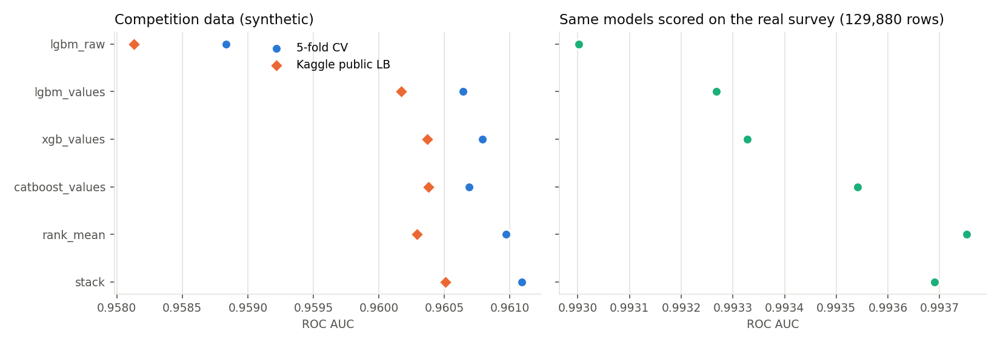
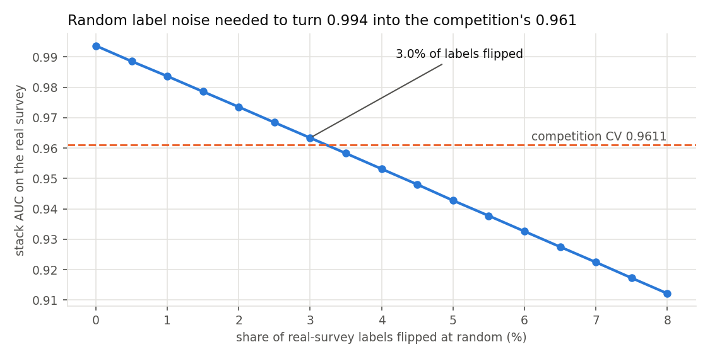
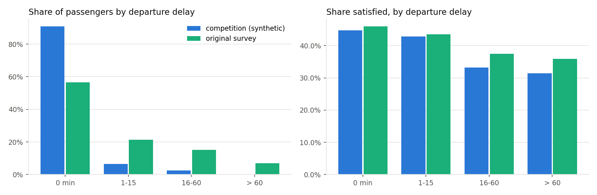

Kaggle Playground S6E10 asks for the probability that an airline passenger is satisfied. Its 1 million rows are synthetic and were generated from a real survey of 129,880 passengers. I scored every competition model on that real survey too. The stack that gets 0.961 on the leaderboard ranks real passengers at 0.994. To push it back down to 0.961, about 3% of the real labels have to be flipped at random.
Five models on one shared 5-fold split, plus two blends. All seven files were submitted together, so nothing was tuned on the leaderboard. The last column scores the same fold models on the original survey, which they never trained on.
| Submission | 5-fold CV | Kaggle public | Real survey |
|---|---|---|---|
| Logistic regression | 0.92156 | 0.92227 | 0.92000 |
| LightGBM, raw columns | 0.95884 | 0.95813 | 0.99300 |
| LightGBM + value features | 0.96064 | 0.96017 | 0.99327 |
| XGBoost (GPU) + value features | 0.96079 | 0.96037 | 0.99333 |
| CatBoost (GPU), values as categories | 0.96069 | 0.96038 | 0.99354 |
| Rank mean of the four tree models | 0.96097 | 0.96029 | 0.99375 |
| Logistic stack of the four tree models | 0.96109 | 0.96051 | 0.99369 |

A model trained only on synthetic rows ranks the real passengers at 0.9937. A LightGBM trained on the real survey and scored on a held-out 20% of it reaches 0.9950. So the synthetic data still carries the survey's structure. The score is limited by its labels.

Seen this way, the leaderboard is packed against a noise floor. The leader is 0.0036 above this stack and the median team 0.0009 below it.
The value models treat each exact value, and each pair of values from two columns, as a category. They use out-of-fold target encoding over the 21 columns and all 210 pairs, plus value counts. CatBoost does the same with its own categorical handling. This lifts CV from 0.9588 to 0.9606-0.9608. I expected these models to be learning quirks of the generator and to lose on the real survey. They gain there as well, from 0.9930 to 0.9933-0.9935.
Appending all 129,880 original passengers to every training fold moves CV from 0.95884 to 0.95866. A model trained only on the survey scores 0.9549 on the competition rows. The generator changed the data. 91% of synthetic passengers left on time, against 56% in the survey. The satisfaction drop with delays is steeper, and one rating ("Inflight service") was removed.
